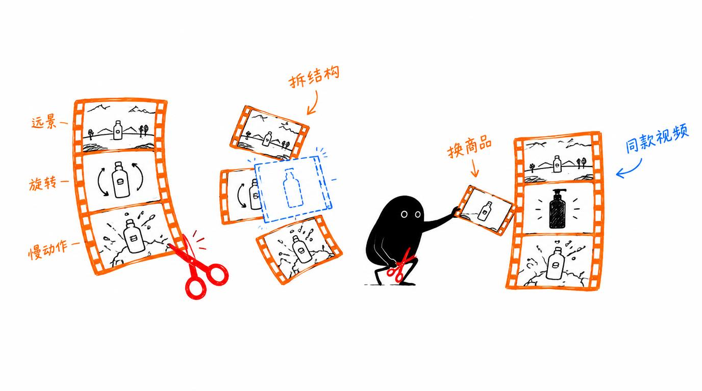

刷到一条好视频想照着做？给它一条参考视频，自动换成你的商品和效果，产出同结构新片，过程可控可改，还不用装一堆重型组件。
同类工具要装 10G 奇怪组件，效果还很一般
想复刻一条带货视频的结构，何必被重型工具劝退？video-clone-lite 把「分析参考视频 → 替换商品/效果 → 生成同结构新片」做成轻量流程，依赖克制、过程可干预，生成结果不满意随时改。
轻量视频复刻工具 的六大能力
自动分析参考视频的叙事结构和镜头语言
把参考视频里的商品、效果替换成你的，保留原结构
从分析到生成自动完成，人工只需提供素材和需求
关键环节可人工介入调整，不满意就改那一版
不装大型组件，普通环境即可跑起来
为带货、种草类短视频复刻场景优化
小黑手绘风格插图

从输入到产出，一步到位
快速开始
git clone https://github.com/liangdabiao/video-clone-lite.git
将技能目录放入 ~/.workbuddy/skills/ 或 ~/.claude/skills/
给出参考视频 + 想替换的商品/效果描述
AI 按技能流程复刻，中途可随时调整需求
现代化技术组合
关于 轻量视频复刻工具 的常见疑问